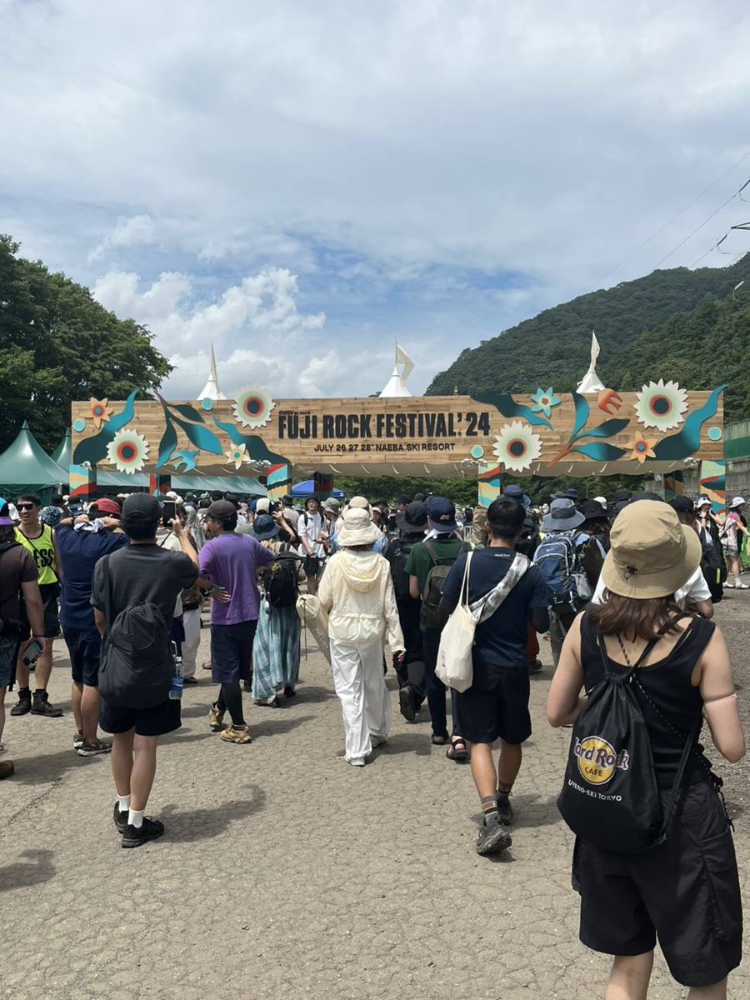

2024 FUJI ROCK FESTIVAL - 음악으로 뜨거웠던 여름
2024년 여름, 나는 드디어 꿈에 그리던 후지 록 페스티벌에 다녀왔다.
음악을 사랑하고, 음반을 모으는 삶을 살아온 나에게
‘직접 무대를 본다’는 건 언제나 로망 그 자체였다.
일본 니가타현의 대자연 속에서 열리는 후지 록은
그저 음악 페스티벌을 넘어서, 일상과 완전히 분리된 음악 세계로의 여행이었다.
비 오는 날씨, 축축한 흙바닥, 그리고 끝없이 이어지는 숲길조차
그 순간엔 모두 낭만으로 느껴졌다.
이번 페스티벌에서 내가 가장 기대했던 밴드는 단연 The Killers였다.
헤드라이너로 등장한 그들은 “Mr. Brightside”가 시작되자마자
수만 명의 관객을 하나로 만들어버렸다.
브랜든 플라워스의 에너지 넘치는 퍼포먼스는
스크린 너머로만 보던 그들의 무대를 현실로 마주하게 한 강렬한 순간이었다.
그와는 또 다른 온도의 무대를 보여준 건 Lucky Kilimanjaro였다.
일본 특유의 세련된 시티팝 감성과 일렉트로닉 사운드가 절묘하게 섞인 무대는
해가 지고 공기가 서늘해질 무렵, 관객의 흥을 서서히 끌어올렸다.
그들의 음악은 현장에서 들을 때 더 특별하게 느껴졌고,
관객들이 자연스럽게 몸을 흔들며 만들어낸 분위기는 말 그대로 ‘페스티벌의 맛’이었다.
그리고 정말 예상 밖의 감동을 안겨준 무대는 마카로니 앤 파츠였다.
밴드 특유의 감성적인 멜로디와 친근한 분위기는
크게 화려하지 않아도 충분히 사람을 사로잡을 수 있다는 걸 보여줬다.
현지 팬들과 함께 따라 부르던 순간, 언어가 달라도 음악으로 하나가 될 수 있다는 걸 다시 한 번 느꼈다.
타에코 오누키의 무대는 마치 시간 여행을 하는 기분이었다.
수십 년간 일본 시티팝의 상징처럼 여겨진 그녀의 목소리는
현장에서도 전혀 흐릿하지 않았고, 오히려 더 맑고 선명했다.
비가 살짝 내리던 그 순간, 그녀의 노래와 함께 후지 산맥의 풍경이 겹쳐지며
눈앞이 뿌옇게 흐려질 만큼 감동적이었다.
마지막으로 본 무대는 오마르 아폴로였다.
그의 음악은 R&B, 라틴, 얼터너티브를 넘나들며
지금 세대의 정서를 아주 감각적으로 담아낸다.
무대 위에서 그는 솔직했고, 섬세했으며, 무심한 듯 진심이었다.
특히 “Evergreen”이 흐를 때의 그 정적과 환호의 대비는
지금도 생생하게 귀에 맴돈다.
후지 록은 단순히 ‘좋은 무대’를 본 경험이 아니었다.
전혀 다른 언어, 문화, 배경을 가진 사람들이 하나의 리듬에 맞춰 몸을 흔들고,
비를 맞고, 노래하고, 웃고, 울던 그 모든 순간이
‘음악’이라는 단어에 담긴 힘을 체감하게 만든 시간이었다.
집으로 돌아오는 길, 나는 또 하나의 레코드처럼
이 여름의 기억을 마음 깊은 곳에 조심스럽게 담아두었다.
그리고 언젠가 다시, 이곳으로 돌아올 거란 걸 직감했다.